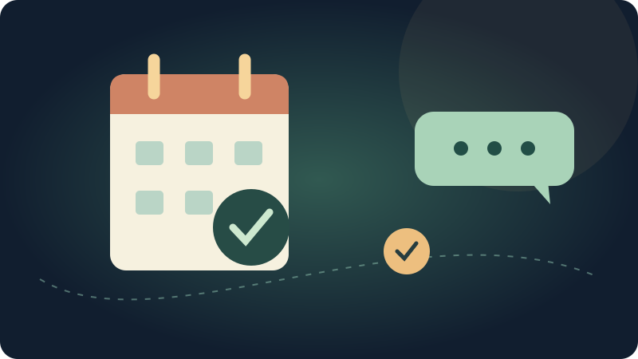
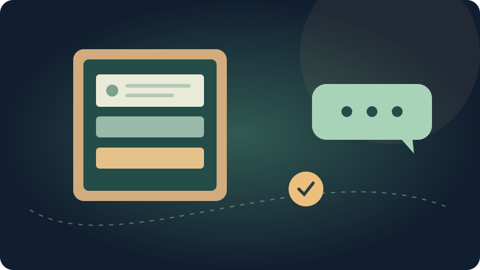
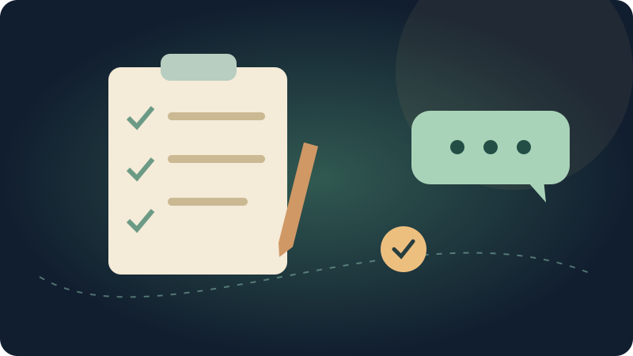

PEDIDOS E VENDAS · 6 min de leitura
Uma padaria fictícia mostra como conectar a conversa do cliente ao andamento de um pedido, sem depender de alguém diante do WhatsApp o tempo todo.
Ler o passo a passo ↗
ATENDIMENTO A DISTÂNCIA · 12 min de leitura
Mova o balcão de atendimento para outro computador e confirme uma conversa completa, mantendo o WhatsApp da empresa onde ele já está.
Ler o passo a passo ↗
SERVIÇOS E AGENDAMENTOS · 6 min de leitura
Um estúdio fictício mostra como manter a conversa ligada à organização da agenda, com mensagens esperadas e acompanhamento humano.
Ler o passo a passo ↗COMECE DO ZERO · 9 min de leitura
Entenda para que serve, onde entrar e como dar os primeiros passos, com exemplos da rotina e palavras que você já conhece.
Ler o passo a passo ↗
ROTINA SEM COMPLICAÇÃO · 6 min de leitura
Aprenda a conferir recebimentos, perceber quando algo precisa de atenção e conversar com a equipe sem se perder nos detalhes.
Ler o passo a passo ↗
PREPARE COM A EQUIPE · 6 min de leitura
Um roteiro para definir o resultado, conversar com quem cuida das ferramentas e começar com um caso que todos entendam.
Ler o passo a passo ↗CONFIGURE NA EXTENSÃO · 10 min de leitura
Crie os caminhos de receber e enviar, escolha a aplicação que participa e decida quais mensagens podem passar, usando os controles da própria Bridge.
Ler o passo a passo ↗